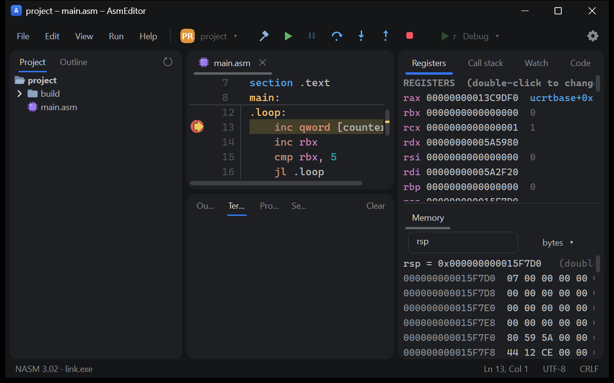
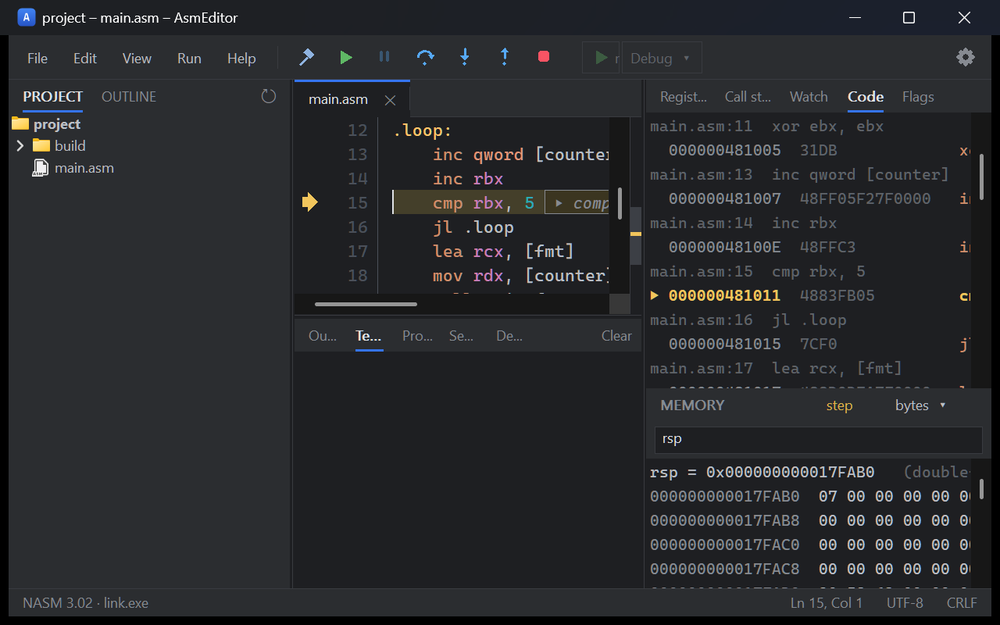
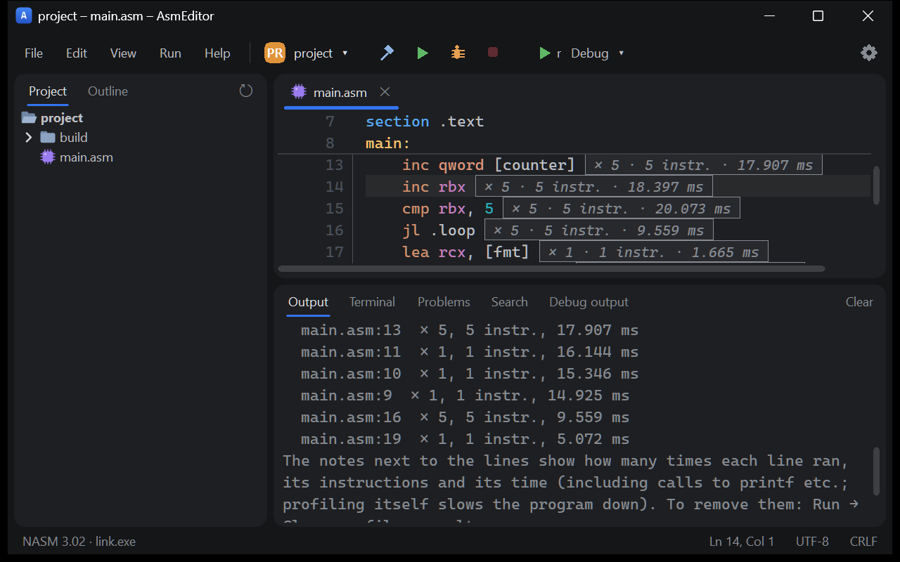

AsmEditor
A lightweight NASM editor and debugger for Windows, built for learning x86-64 assembly. Write code, build it with one key, and step through it while registers, flags, the stack and memory change.
Windows 10 and 11 · free and open source (MIT) · needs NASM and a linker (Visual Studio or MinGW)

What it does
An editor that knows assembly
Highlighting, folding, completion of instructions, registers and your own labels, hover help for every instruction, inlay hints with argument names, sticky section lines, go to definition and rename.
Catches beginner mistakes
Errors as you type, a misaligned stack or missing shadow space before a call, callee-saved registers
left changed, div without preparing rdx, with quick fixes.
A debugger for learning
Breakpoints, stepping (also backwards), registers with their changes, memory, the stack, flags and the conditions of jumps, values of registers shown next to the code.
See what the code costs
The disassembly under each source line, and a profiler that counts how many times each line ran and how long it took.
Lessons and exercises
Built-in lessons and tasks checked by tests, and a format for teachers to give their own tasks and collect the results.
Feels like a modern IDE
Tabs, split views and windows of their own, Search Everywhere on double Shift, a switcher on Ctrl+Tab, changed lines in the gutter, themes, English and Russian.
Screenshots


Get started
- Download AsmEditor-setup (installer) or AsmEditor-portable.zip from the
latest release. With
Scoop:
scoop install https://raw.githubusercontent.com/Anready/AsmEditor/main/packaging/scoop/asmeditor.json
- Install NASM and a linker: Visual Studio (or the Build Tools) with the C++
workload, or MinGW
gcc. AsmEditor finds them on its first start. - Create a project from a template (File → New project), press F5 to debug and F10 to step.
Written by an AI
The code, tests, build scripts, installer and documentation of AsmEditor were written by Claude, an AI model made by Anthropic, working in Claude Code. Read how the project was made.